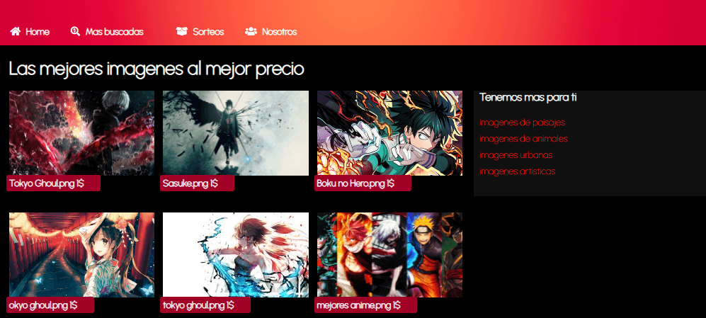
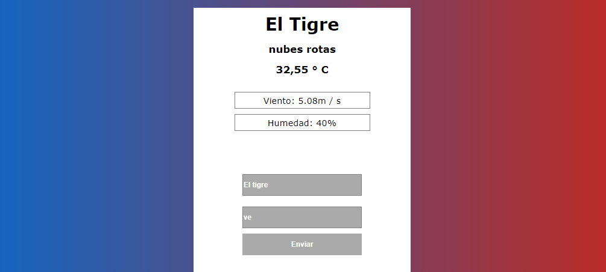
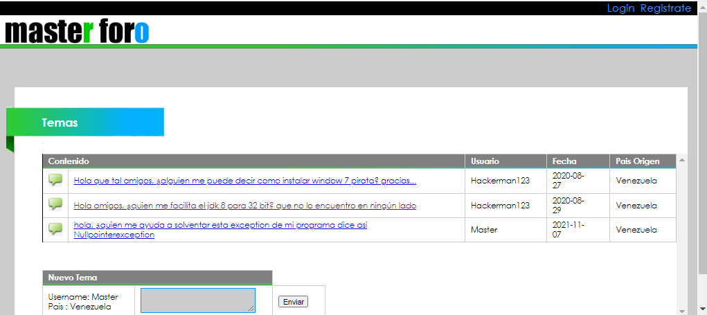

Sobre mi
Soy Jesús Salazar desarrollador web venezolano, egresado como Técnico Superior Universitario de la UPTJAA, y caracterizado por nunca parar de aprender, lo cual es una característica de vital importancia en todo programador.
Curriculum vitaeProyectos

App de informaciónde animeHTMLCSSJAVASCRIPT

App delclimaHTML CSSJAVASCRIPT

Copia deneobuxForumHTML CSSJAVASCRIPTJAVAMYSQL